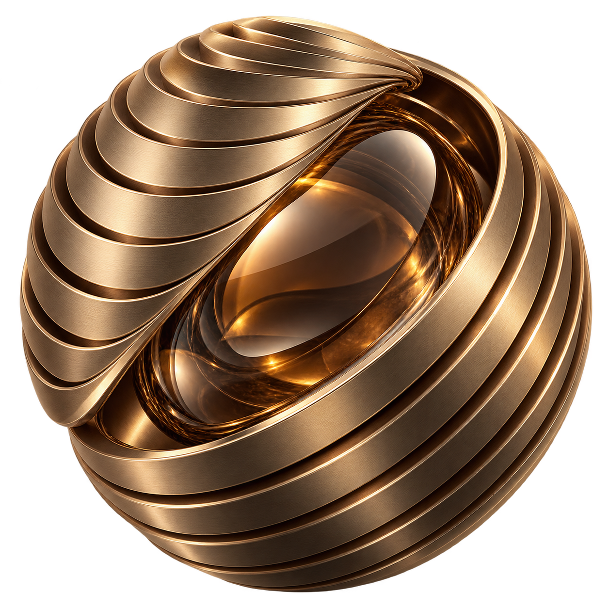

Espaço para novas ideias.
Meus próximos projetos acadêmicos e de tecnologia serão apresentados aqui.
EM BREVECONHECIMENTO EM CONSTANTE EVOLUÇÃO
Olá, eu sou
Estudante de Inteligência Artificial
Explorando novas possibilidades através da tecnologia, do conhecimento e da criatividade.


01 / SOBRE MIM
Meu nome é Julia Aguiar e sou estudante do Ensino Médio integrado ao Ensino Técnico em Inteligência Artificial na Fundação Escola de Comércio Álvares Penteado (FECAP).
Minha trajetória reúne experiências acadêmicas, profissionais e pessoais que contribuem para o meu desenvolvimento.
Trabalhei durante dois anos em uma empresa de contabilidade, onde realizei atividades como emissão de notas fiscais e tive contato com a rotina do ambiente profissional.
Também pratiquei natação durante dois anos, uma experiência que fez parte da minha trajetória pessoal.
Atualmente, estou ampliando meus conhecimentos na área de Inteligência Artificial, explorando as possibilidades que a tecnologia oferece para o futuro.
02 / MINHA TRAJETÓRIA
Cada experiência acrescenta uma nova perspectiva à minha história.
Ensino Médio integrado ao Ensino Técnico em Inteligência Artificial na Fundação Escola de Comércio Álvares Penteado.
Dois anos de experiência em empresa de contabilidade, com emissão de notas fiscais e contato com rotinas administrativas e contábeis.
Pratiquei natação durante dois anos, uma experiência que também faz parte da minha trajetória pessoal.
03 / PORTFÓLIO
Um espaço para meus futuros trabalhos escolares e projetos de tecnologia.
Meus próximos projetos acadêmicos e de tecnologia serão apresentados aqui.
EM BREVEUm espaço reservado para compartilhar meus futuros trabalhos.
EM BREVE04 / HABILIDADES E EXPERIÊNCIAS
Conhecimentos em construção no Ensino Técnico.
EM FORMAÇÃOAtividade realizada durante minha experiência profissional.
Contato com o dia a dia de uma empresa de contabilidade.
Desenvolvimento de trabalhos e exploração de novas possibilidades.
05 / ALÉM DOS PROJETOS
Um espaço reservado para compartilhar meus registros e momentos.
06 / CONTATO
Conheça meus projetos e acompanhe minha trajetória em tecnologia.
Meu GitHub ↗